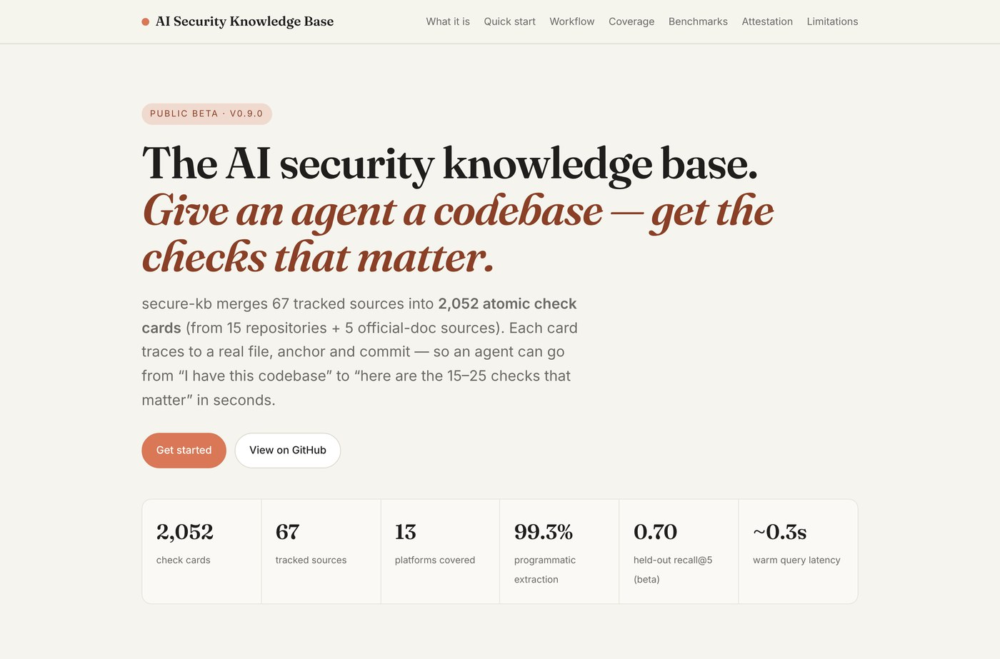
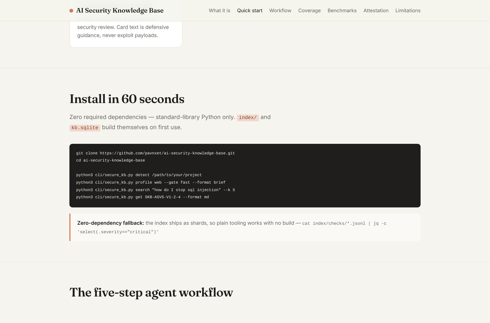

What it is
secure-kb (the AI Security Knowledge Base) is a retrieval layer built for AI coding agents. It merges 67 tracked sources into 2,052 atomic security check cards, normalises them, and exposes them through a fast gate, a platform router, and a zero-dependency SQLite FTS5 index.
It is not a scanner, and it does not replace a professional audit. What it does is tell an agent what to verify for a given codebase — then let it report pass / fail / n-a with evidence. Every card traces back to a real file, anchor and commit.

The problem it solves
Ask a coding agent to "review this repo for security bugs" and you usually get generic advice: escape your inputs, use parameterised queries, keep dependencies updated. Correct, but unfalsifiable and untethered from the code in front of it.
The knowledge base flips that around. Instead of a vague prompt, the agent detects the stack, pulls the checks that apply, and works through them one by one — the way a human AppSec reviewer would, but in seconds. Card text is strictly defensive guidance; it never contains exploit payloads.
What's inside
Cards come from official OWASP material and a handful of high-quality community baselines, each with its own licence recorded.
| Source | Cards |
|---|---|
| OWASP Cheat Sheet Series | 1,032 |
| secure-coding-baseline (Tier-2) | 353 |
| OWASP ASVS 5.0 | 339 |
| OWASP WSTG | 112 |
| OWASP MASTG / MASVS (mobile) | 52 |
| Smart-contract & API checklists | 62 |
| Authored (Telegram, Chrome, Electron) | 15 |
| Total | 2,052 |
Cards use source-identity IDs such as SKB-ASVS-V3-4-5 or SKB-WSTG-INFO-01, and merged cards keep every historical id in aliases[] so nothing ever stops resolving.
The five-step workflow
It ships as a CLI, an MCP server (9 tools), and an Agent Skills bundle, so it drops into Claude Code, Codex, OpenCode and any MCP-capable harness.
- Detect the stack —
secure-kb detect /path/to/projectreturns ranked platforms. - Profile it —
profile web --gate fast. - Gate — the top checks by priority, domain-balanced, inside a small token budget.
- Drill down —
get <id>, or search by CWE / ASVS / MASVS reference. - Report — pass / fail / n-a / unknown, each with evidence. No "pass" without evidence.

Verifiable attestation
An agent's security claim is normally unfalsifiable prose. secure-kb can instead emit a Verifiable Security Attestation — a deterministic, tamper-evident record of which checks ran, against which KB build, on which exact code fingerprint — that anyone can verify offline.
Change the checks, use a different KB build, or edit the target, and verification fails. It is also available over MCP as attest and verify_attestation.
Use it
Clone it, run detect, and you have an answer in under a minute. The project is currently a public beta (v0.9.x): the build is deterministic and reproducible, but the retrieval targets are not yet met, so it is deliberately not v1.0.0.